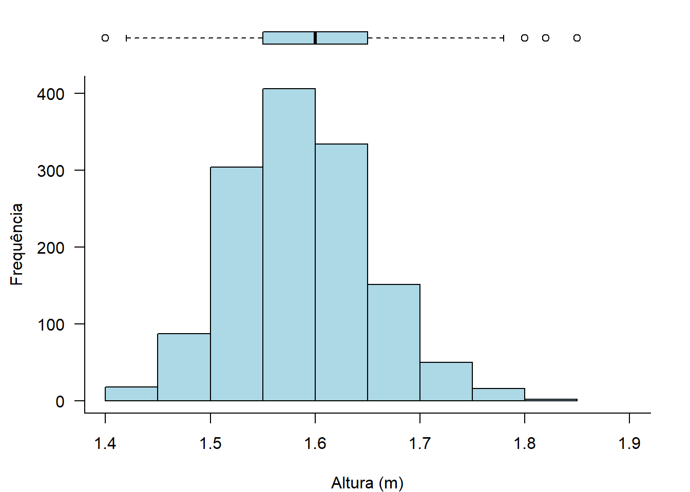
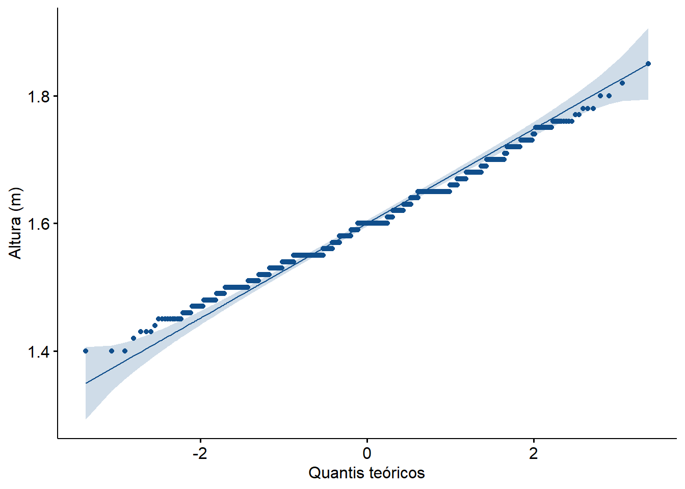
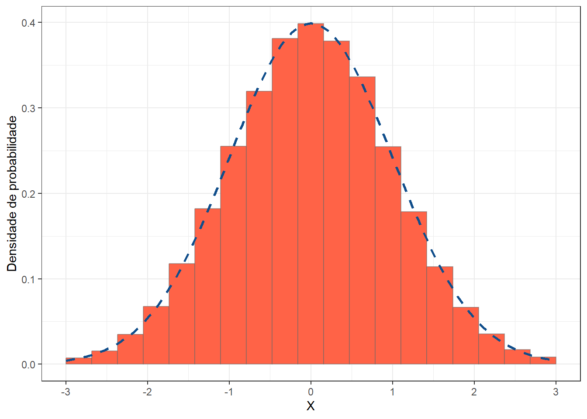

pacman::p_load(DescTools,
dplyr,
e1071,
ggplot2,
ggpubr,
grDevices,
moments,
readxl,
rstatix)8 Assimetria e Curtose
8.1 Pacotes necessários neste capítulo
8.2 Dados
Será usada a mesma variável altura de 1368 mulheres do conjunto de dadosdadosMater.xlsx, já mostrado anteriormente (Seção 7.4.1).
8.2.1 Exploração dos dados
O resumo dos dados pode ser realizado, usando a função summarise() do pacote dplyr. A moda será calculada usando com função Mode() do pacote DescTools.
dados <- read_excel("dados/dadosMater.xlsx") %>%
select(altura)
resumo <- dados %>%
summarise(n = n(),
media = mean(altura, na.rm = TRUE),
dp = sd(altura, na.rm = TRUE),
mediana = median(altura, na.rm = TRUE),
moda = Mode(altura),
Q1 = quantile (altura, 0.25),
Q3 = quantile (altura, 0.75),
CV = dp/media)
resumo# A tibble: 1 × 8
n media dp mediana moda Q1 Q3 CV
<int> <dbl> <dbl> <dbl> <dbl> <dbl> <dbl> <dbl>
1 1368 1.60 0.0655 1.6 1.6 1.55 1.65 0.0410Para a exploração visual dos dados, será construído um histograma com um boxplot sobreposto (Figura 8.1). A função layout() tem o formato layout(mat) onde mat é um objeto da classe matriz que permite dividir a janela de plotagem em áreas com tamanhos personalizados. Abaixo, cria-se uma matriz com uma coluna e duas linhas com uma relação de 1:8 entre as linhas. A função par() é utilizada para alterar as margens. Para mais detalhes acesse aqui.
# Estruturação do layout do gráfico
layout(matrix(c(1,2), nrow = 2 , ncol = 1,
byrow = TRUE), heights = c(1, 8))
# Boxplot
par (mar=c (0, 4.3, 1.1, 2))
boxplot (dados$altura,
horizontal = TRUE,
ylim = c (1.4, 1.9),
xaxt = "n",
col = "lightblue",
frame = FALSE)
#Histograma
par (mar=c (4, 4.3, 1.1, 2))
hist (dados$altura,
breaks=15,
col = "lightblue",
border = "black",
main = "",
xlab = "Altura (m)",
ylab = "Frequência",
xlim = c(1.4,1.9),
las = 1)
box(bty = "L")
# Restauração do padrão
par (mar = c(5, 4, 4, 2) + 0.1)

8.3 Assimetria
A assimetria analisa a proximidade ou o afastamento de um conjunto de dados quantitativos em relação à distribuição normal. Mede o grau de afastamento de uma distribuição em relação a um eixo central (geralmente a média).
Quando a curva é simétrica, a média, a mediana e a moda coincidem, num mesmo ponto, havendo um perfeito equilíbrio na distribuição. Quando o equilíbrio não acontece, isto é, a média, a mediana e a moda recaem em pontos diferentes da distribuição esta será assimétrica; enviesada a direita ou esquerda. podendo-se caracterizar como curvas assimétricas à direita ou à esquerda. Quando a distribuição é assimétrica à esquerda ou assimetria negativa, a cauda da curva localiza-se à esquerda, desviando a média para este lado (Figura 8.2). Na assimetria positiva, ocorre o contrário, a cauda está localizada à direita e da mesma forma a média (1).

8.3.1 Avaliação da assimetria
O R dispões de diversas maneiras para o cálculo do coeficiente de assimetria. O coeficiente de assimetria é um método numérico estatístico para medir a assimetria da distribuição ou conjunto de dados. Ele fala sobre a posição da maioria dos valores de dados na distribuição em torno do valor central.
8.3.1.1 Cálculo do coeficiente de assimetria
Várias medidas de coeficientes de assimetria amostrais foram propostas. O coeficiente de assimetria pode ser calculado no R, usando a função skewness() do pacote e1071 (2). Esta função usa os seguintes argumentos:
- x \(\to\) vetor numérico que contém os valores
- na.rm \(\to\) um valor lógico que indica se os valores NA devem ser eliminados antes que o cálculo prossiga.
- type \(\to\) número inteiro entre 1 e 3 selecionando um dos algoritmos para calcular assimetria detalhados abaixo.
Os três tipos são os seguintes:
- Tipo 1, g1 \(\to\) definição típica usada em muitos livros didáticos mais antigos. Dada pela fórmula:
\[ g_1=\frac{m_3}{m_2^\frac{3}{2}} \]
onde os momentos amostrais para amostras de tamanho n são dados por:
\[ m_r=\frac{\sum(x_i - \overline{x})^r}{n} \]
Para o momento central amostral de ordem r = 3, tem-se:
\[ m_3=\frac{\sum(x_i - \overline{x})^3}{n} \] Para r = 2,
\[ m_2=\frac{\sum(x_i - \overline{x})^2}{n} \]
Usando o resumo dos dados:
m3 <- (sum((dados$altura - (mean(dados$altura)))^3))/resumo$n
m3[1] 5.081924e-05 m2 <- (sum((dados$altura - (mean(dados$altura)))^2))/resumo$n
m2[1] 0.004284321Colocando os dados na fórmula do g1 no R, chega-se ao resultado:
g1 <- m3/(m2)^(3/2)
g1[1] 0.1812196Usando a função skewness() do pacote e1071, chega-se ao mesmo resultado:
e1071::skewness(dados$altura, type = 1)[1] 0.1812196- Tipo 2, G1 \(\to\) Usado em vários pacotes estatísticos. É calculado com a seguinte fórmula:
\[ G_1=\frac{g_1 \sqrt{n(n-1)}}{n-2} \]
Colocando os dados na fórmula na linguagem do R, tem-se:
G1 <- (g1*sqrt((resumo$n*(resumo$n-1))))/(resumo$n-2)
G1[1] 0.1814186Calculando com a função skewness() do pacote e1071:
e1071::skewness(dados$altura, type = 2)[1] 0.1814186- Tipo 3, b1 \(\to\) É o padrão da função
skewness()do pacotee1071. Usa-se a seguinte fórmula para o cálculo:
\[ b_1= \frac {m_3}{s^3} \]
onde s é o desvio padrão da amostra. Na linguagem R, tem-se:
b1 <- m3/(resumo$dp)^3
b1[1] 0.1810209Usando a função skewness() do pacote e1071:
e1071::skewness(dados$altura, type = 3)[1] 0.1810209Para amostras grandes, há muito pouca diferença entre as várias medidas (3). Todas as três medidas de assimetria são imparciais sob normalidade.
Interpretação do coeficiente de assimetria
Quando a \(assimetria = 0\), tem-se uma distribuição simétrica e a média, a mediana e a moda coincidem; quando a \({assimetria} < {0}\), \({média} < {mediana} < {moda}\), a distribuição tem assimetria negativa e quando a \({assimetria} > {0}\), \({média} > {mediana} > {moda}\), a distribuição tem assimetria positiva.
A Tabela 8.1 sugere uma forma de interpretar o coeficiente de assimetria (4).
| Valor do Coeficiente | Assimetria |
|---|---|
| -1 a +1 | leve |
| -1 a -2 e +1 a +2 | moderada |
| -2 a -3 e +2 a +3 | importante |
| < -3 ou > +3 | grave |
Observando o formato da distribuição no histograma e no boxplot, na Figura 8.1, e no resultado do coeficiente de assimetria, conclui-se que a variável altura tem uma assimetria positiva leve, não preocupante. É possível aceitar essa variável como praticamente simétrica.
8.3.1.2 Avaliação da assimetria com o gráfico QQ
Outra ferramenta gráfica que permite avaliar a simetria dos dados é o gráfico QQ (gráfico quantil-quantil). Ele permite observar se a distribuição se ajusta a distribuição normal. O gráfico QQ é um gráfico de dispersão que compara os quantis 1 da amostra com os quantis teóricos de uma distribuição de referência. Se os pontos do gráfico QQ formarem uma reta, isso indica que os dados têm a mesma distribuição da referência. Se os pontos se afastarem da reta, isso indica que os dados têm uma distribuição diferente da referência. Para construir um gráfico QQ, pode-se usar a função ggqqplot()do pacote ggpubr. Ele apresenta uma linha de referência, acompanhada de uma area sombreada, correspondente ao Intervalo de Confiança de 95% (veja o Capítulo 10):
ggqqplot(data = dados,
x = "altura",
conf.int = TRUE,
shape = 19,
xlab = "Quantis teóricos",
ylab = "Altura (m)",
color = "dodgerblue4")

A Figura 8.3 exibe que a linha formada pelos pontos, praticamente, formam uma linha reta. É mais uma informação mostrando que os dados têm uma distribuição simétrica aceitável.
8.3.1.3 Pesquisa de valores atípicos
Os valores atípicos atraem as caudas da dispersão aumentando a possibilidade de assimetria. No boxplot da Figura 8.1, verifica-se a presença de outliers que devem ser avaliados.
Para examinar os outliers, as estatísticas do boxplot são úteis, pois mostram a quantidade e os respectivos valores. A função boxplot.stats() do pacote grDevices, entregam as estatísticas dos 5 números (min, P25, mediana, P75 e max), o total de observações, o limite inferior e superior do intervalo de confiança de 95% e os valores atípicos (outliers)::
boxplot.stats(dados$altura)$stats
[1] 1.42 1.55 1.60 1.65 1.78
$n
[1] 1368
$conf
[1] 1.595728 1.604272
$out
[1] 1.40 1.82 1.80 1.40 1.40 1.85 1.80Outra maneira de identificar os outliers é através da função indentify_outliers() do pacote rstatix:
dados %>%
rstatix::identify_outliers(altura)# A tibble: 7 × 3
altura is.outlier is.extreme
<dbl> <lgl> <lgl>
1 1.4 TRUE FALSE
2 1.82 TRUE FALSE
3 1.8 TRUE FALSE
4 1.4 TRUE FALSE
5 1.4 TRUE FALSE
6 1.85 TRUE FALSE
7 1.8 TRUE FALSE Ambas as funções identificaram 7 valores atípicos (acima ou abaixo 1,5 vezes o intervalo interquartil), mas, como mostra a função identify_outliers, eles exercem pouca influência, pois não são extremos, ou seja, acima de três vezes o intervalo interquartil.
8.4 Curtose
É o grau de achatamento de uma distribuição, em relação a distribuição normal. A curtose indica como o pico e as caudas de uma distribuição diferem da distribuição normal. A assimetria mede essencialmente a simetria da distribuição, enquanto a curtose determina o peso das caudas da distribuição. Portanto, é uma medida dos tamanhos combinados das duas caudas; mede a quantidade de probabilidade nas caudas. A curtose pode ser de três tipos (Figura 8.4):
- Mesocúrtica \(\to\) quando a distribuição é normal;
- Leptocúrtica \(\to\) quando a distribuição é mais pontiaguda e concentrada que a normal, mostrando caudas pesadas em ambos os lados;
- Platicúrtica \(\to\) quando a distribuição é mais achatada e dispersa que a normal, com caudas planas.
Uma curtose em excesso é uma medida que compara a curtose de uma distribuição com a curtose de uma distribuição normal. A curtose de uma distribuição normal é igual a 3. Portanto, o excesso de curtose é determinado subtraindo 3 da curtose:
\[ Excesso \space de \space curtose = curtose - 3 \]
A distribuição normal tem uma curtose de zero e é chamada de mesocúrtica. Uma distribuição com curtose maior que zero (ou três) é mais alta e concentrada que a normal, mostrando caudas pesadas em ambos os lados, e é chamada de leptocúrtica. Uma distribuição com curtose menor que zero é mais achatada e dispersa que a normal, com caudas planas, e é chamada de platicúrtica.
Os dados que seguem uma distribuição mesocúrtica mostram um excesso de curtose de zero ou próximo de zero. Isso significa que se os dados seguem uma distribuição normal, eles seguem uma distribuição mesocúrtica. A distribuição leptocúrtica mostra caudas pesadas em ambos os lados, indicando grandes valores discrepantes. Uma distribuição leptocúrtica manifesta uma curtose excessiva positiva. Uma distribuição platicúrtica mostra uma curtose excessiva negativa, revela uma distribuição com cauda plana.

8.4.1 Avaliação da curtose
8.4.1.1 Cálculo do coeficiente de curtose
O coeficiente de curtose pode ser calculado no R usando a função kurtosis() do pacote e1071. Esta função usa os mesmos argumentos da função skewness(), vista acima. Calcula três tipos de coeficientes:
- Tipo 1, g2 \(\to\) definição típica usada em muitos livros didáticos mais antigos. Dada pela fórmula:
\[ g_2=\frac{m_4}{m_2^2} - 3 \]
onde os momentos amostrais para amostras de tamanho n são dados por:
\[ m_r=\frac{\sum(x_i - \overline{x})^r}{n} \]
Para o momento central amostral de ordem r = 4, tem-se:
\[ m_4=\frac{\sum(x_i - \overline{x})^4}{n} \]
Para r = 2,
\[ m_2=\frac{\sum(x_i - \overline{x})^2}{n} \]
Usando o resumo dos dados:
m4 <- (sum((dados$altura - (mean(dados$altura)))^4))/resumo$n
m4[1] 5.734699e-05 m2 <- (sum((dados$altura - (mean(dados$altura)))^2))/resumo$n
m2[1] 0.004284321Colocando os dados na fórmula do g2 no R, chega-se ao resultado:
g2 <- (m4/(m2)^2)-3
g2[1] 0.1242567Usando a função do pacote e1071, chega-se ao mesmo resultado:
e1071::kurtosis(dados$altura, type = 1)[1] 0.1242567- Tipo 2, G2 \(\to\) Usado em vários pacotes estatísticos. É calculado com a seguinte fórmula:
\[ G_2=\left (\left (n + 1 \right )g_2 + 6 \right )\frac{\left (n - 1 \right)}{\left ( \left(n-2 \right)\left (n-3 \right) \right )} \] Colocando os dados na fórmula na linguagem do R, tem-se:
G2 <- ((resumo$n+1)*g2 + 6)*(resumo$n-1)/((resumo$n-2)*(resumo$n-3))
G2[1] 0.1291109Com a função kurtosis() do pacote e1071:
e1071::kurtosis(dados$altura, type = 2)[1] 0.1291109- Tipo 3, b2 \(\to\) É o padrão da função
kurtosis()do pacotee1071.Usa-se a seguinte fórmula para o cálculo:
\[ b_2=\frac{m_4}{s^4}-3 \] onde s é o desvio padrão da amostra.
Na linguagem R, tem-se:
b2 <- m4/(resumo$dp)^4 - 3
b2[1] 0.1196907Com a função kurtosis():
e1071::kurtosis(dados$altura, type = 3)[1] 0.1196907Novamente, para amostras grandes, há muito pouca diferença entre as várias medidas, principalmente entre G2 e b2 (3).
8.4.1.2 Interpretação do coeficiente de curtose
Os coeficientes calculados pela função do pacote e1071 retornam um resultado equivalente ao excesso de curtose. A curva normal tem um excesso de curtose próximo a zero e a curva é dita mesocúrtica. Se o coeficiente for positivo, os dados são leptocúrticos e se for negativo, os dados são platicúrticos. O resultado do exemplo aponta para uma distribuição leptocúrtica, pois existe um pequeno excesso de curtose (g2 = 0.1242567). Os valores que contribuem para a curtose são aqueles fora da região do pico, ou seja, ou outliers. A curva mesocúrtica tem um coeficiente de 3. Portanto, os valores calculados anteriormente referem-se ao excesso de curtose. O resultado da g2 = 0,1242567 pode ser escrito como b2 = 3,1242567. Daí o termo excesso de curtose.
A função kurtosis() do pacote moments retorna um resultado ao redor de 3, para o coeficiente tipo 1. Para chegar ao mesmo resultado do coeficiente tipo 1 da função do pacote e1071, deve-se subtrair 3 do resultado.
moments::kurtosis(dados$altura)[1] 3.1242578.5 Exercício
- Criar um conjunto de dados com distribuição normal com média 0 e desvio padrão 1 e n = 10000 que será atribuído ao um objeto denominado
meusDados.
set.seed(1234)
meusDados <- rnorm(100000, mean = 0, sd = 1)- Construa um histograma (Figura 8.5) com curva normal sobreposta:
ggplot() +
geom_histogram(aes(x = meusDados,
y =after_stat(density)),
bins = 20,
fill='tomato',
col=alpha('gray40',0.5)) +
geom_function(fun=dnorm,
args=list(mean=0,sd=1),
col='dodgerblue4',
lwd=1,
lty=2) +
labs(x='X',
y='Densidade de probabilidade')+
scale_x_continuous(limits = c(-3, 3),
n.breaks = 6) +
theme_bw()

- Observe a skewness e a kurtosis
e1071::skewness(meusDados)[1] 0.008609517e1071::kurtosis(meusDados)[1] -0.003450388Como era de se esperar, usando a rnorm(), a distribuição é um exemplo de distribuição normal, \(skewness \approx 0\) e \(kurtosis \approx 0\). Observe que a cada vez que os comandos forem executados, os resultados serão discretamente diferentes. Para evitar isso, deve-se usar set.seed(), veja a seção Seção 7.7.2. Faça o teste!
Sobre os quantis, veja na Seção 6.3.3.4.↩︎